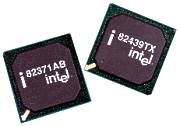
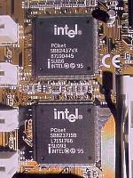

Вспомогательные
микросхемы
Тактовый генератор
Генератор
тактовой частоты вырабатывает специальные импульсы, синхронизирующие работу
логических элементов компьютера. Главный элемент генератора — кристалл
кварца. Частота тактовых импульсов определяет скорость работы процессора.
Установлен фиксированный набор тактовых частот — 16, 20, 25, 33, 40, 50,
60, 66, 100 МГц.
Контроллер прерываний
В одно и
то же время процессор может обслуживать только одно событие. Контроллер
прерываний формирует очередь на обработку этих событий в соответствии с
их важностью (приоритетом). Он имеет 16 линий для сигналов прерываний IRQ0–IRQ15.
Наивысший приоритет имеет линия запроса прерывания IRQ0, наименьший — IRQ7.
Линии прерывания IRQ8–IRQ15 имеют приоритет ниже, чем IRQ1, но выше, чем
IRQ3. Это объясняется тем, что что вторая часть контроллера (IRQ8–IRQ15)
присоединена к входу IRQ2 первой части.
Каждая
линия запроса прерывания обслуживает только одно из имеющихся в компьютере
устройств. Это обеспечивает исключение аппаратных конфликтов и грамотное
разделение системных ресурсов. Распределение номеров прерываний по устройствам
представлено в таблице.
|
IRQ
|
0
|
1
|
2
|
3
|
4
|
5
|
6
|
7
|
|
Устройство
|
системные часы
|
клавиатура
|
IRQ8-15
|
COM2
|
COM1
|
LPT2
|
FDD
|
LPT1
|
|
IRQ
|
8
|
9
|
10
|
11
|
12
|
13
|
14
|
15
|
|
Устройство
|
Таймер
|
IRQ2
|
резерв
|
резерв
|
резерв
|
сопроцессор
|
HDD
|
резерв
|
Контроллер прямого доступа в
память
Режим прямого
доступа в память (DMA — Direct Memory Access) предполагает, что периферийное
устройство связано с памятью непосредственно, минуя внутренние регистры
процессора.
Для организации
прямого доступа в память используется 7-канальный контроллер прямого доступа.
Канал 0 предназначен для регенерации динамической памяти. Канал 2 задействован
для обмена с приводом флоппи-диска, его использует контроллер FDD. Через
канал 3 работает параллельный порт LPT1. Канал 4 используется самим контроллером
DMA. Каналы 1 и 5–7 не задействованы и могут использоваться периферийными
устройствами, имеющими возможность прямого доступа к памяти. Так, например,
звуковой адаптер обычно настраивается на работу через 1 и 5 каналы.
Передача
данных через 1–4 каналы осуществляется побайтно, а для каналов 5–7 16-разрядными
словами.
Набор микросхем

В современных компьютерах не используются отдельные чипы описанных выше
контроллеров, их функции интегрированы в сверхбольшие микросхемы, занимающиеся
обслуживанием основных функциональных узлов компьютера — набор микросхем
(Chipset). На материнской плате это обычно 1–2 микросхемы.
Наиболее
известные производители: Intel, Headland Technology, Chips&Technologies,
VLSI, UMC, OPTi, PC Chips, SiS, Symphony.
В состав
набора входит периферийный контроллер, содержащий два контроллера прерываний(IRQ0–7
и IRQ8–15), два контроллера DMA (каналы 0–3 и 4–7), таймер, часы реального
времени, около 100 байт CMOS RAM.
Современный
набор поддерживает спецификацию шины PCI, синхронную и асинхронную кэш-память,
EDO и FPM DRAM, AGP, имеет встроенный контроллер для Enhanced IDE устройств.
